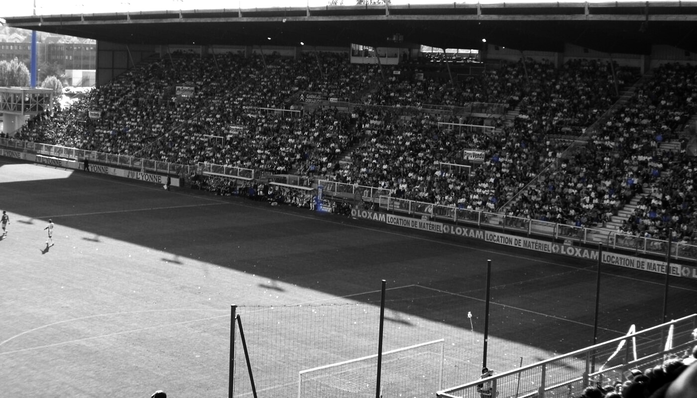
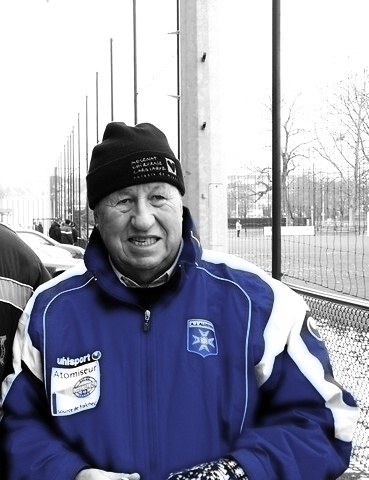
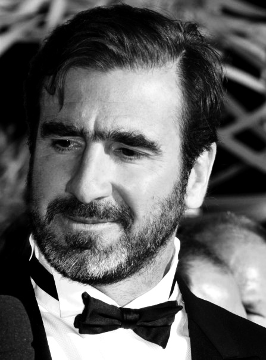
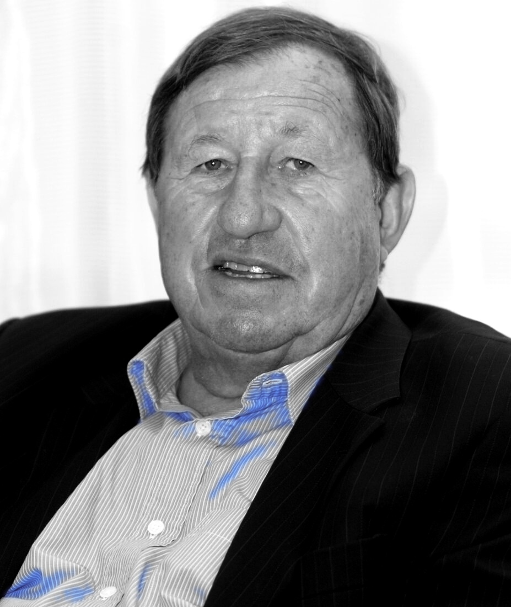

ESTADIO ABBÉ-DESCHAMPS, AUXERRE (FOTO ACTUAL) · VICENTE AUXERRE, CC BY-SA 3.01961

GUY ROUX EN AUXERRE, 2003 · BADAJI_ARPILURE, CC BY-SA 3.0SILBATO Y BOTAS: DIBUJO
FICHA · AJ AUXERRE · 1961

ERIC CANTONA EN CANNES, 2009 · GEORGES BIARD, CC BY-SA 3.01996 · LIGA + COPA
TROFEOS: DIBUJO
1961
1961
CALENDARIO: DIBUJO

GUY ROUX EN 2008 · NICOLAS RICHOFFER, CC BY-SA 4.044 AÑOS
FOTOS (MODIFICADAS): VICENTE AUXERRE Y BADAJI_ARPILURE (CC BY-SA 3.0),
GEORGES BIARD (CC BY-SA 3.0) Y NICOLAS RICHOFFER (CC BY-SA 4.0), VÍA WIKIMEDIA COMMONS
ESCALERA, PIZARRA, SILBATO, BOTAS, TROFEOS, CALENDARIO Y BANQUILLO: DIBUJO